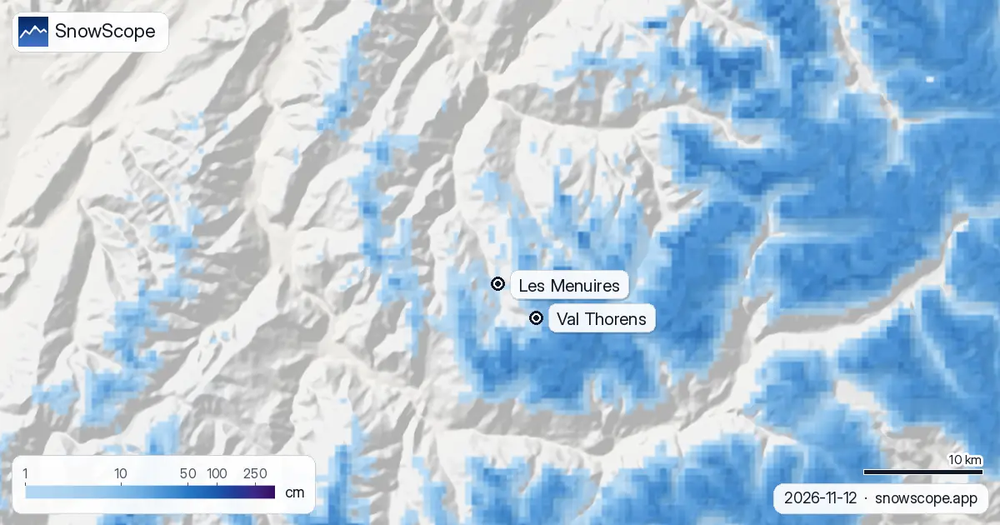

Les Menuires Schneebericht: 28 cm am Gipfel, das Dorf auf 1850 m wartet noch (13. November 2026)
Der Schneebericht für Les Menuires ist heute kurz, denn der Schnee hat bisher nur den Gipfel erreicht. Auf 2838 m liegen 28 cm, davon 15 cm vom letzten Tag. Weiter unten warten die Hänge noch: Auf 2112 m liegt nichts, und auf 1386 m, am Ende der tiefsten kartierten Piste, auch nicht. Der Ort selbst liegt auf 1850 m, zwischen diesen beiden Höhen, das Dorf ist also noch nicht weiß.
Die Live-Schneeprognose für Les Menuires in der SnowScope-AppSchneehöhen, Pulverschnee-Alarme und 3D-Karte, gratis.
Der Bericht, von oben nach unten
Gipfel, 2838 m: 28 cm liegen, 15 cm neu in 24 Stunden, 25 cm in sieben Tagen. Das ist der Grat, der Richtung Val Thorens und Méribel verbindet, und der einzige Teil des Gebiets mit einer echten Decke.
Mitte, 2112 m: 6 cm fielen in der Woche, nichts davon blieb. Eine Spur auf dem Gras, keine Unterlage.
Unten, 1386 m: die ganze Woche trocken, blanker Boden.
Das sind Schätzungen für die Fläche, keine Pegelablesung. Nordhänge über dem Dorf halten etwas mehr, die Sonnenseite des Tals weniger.

Gleiches Tal, 450 m höher: warum Val Thorens vorne liegt
Wer von Les Menuires das Belleville-Tal hinauffährt, kommt nach Val Thorens auf 2300 m, 450 m höher. Unsere heutigen Zahlen zeigen, was diese Meter wert sind: Auf 2498 m in Val Thorens liegen 8 cm und oben 50 cm, gegen nichts auf 2112 m und 28 cm am Gipfel hier. Gleiche Stürme, gleiche Woche; der Unterschied ist die Höhe, kein Glück.
Der Abstand zeigt sich auch in der langen Reihe. Am Ende der tiefsten Piste von Val Thorens (1822 m) haben 13 Wochen des Winters in 9 von 10 Wintern 50 cm oder mehr. Unten in Les Menuires (1386 m) sind es nur 6 Wochen, und 14 in der Hälfte der Winter. Die unteren Hänge sind der empfindliche Teil des Gebiets und der Teil, auf den man in jedem Bericht schauen sollte.
Was die nächsten sieben Tage bringen
Die kommende Woche ist eine andere Geschichte. Unsere Prognose gibt 80 cm am Gipfel, 62 cm auf 2112 m und 24 cm auf 1386 m. Die anderen Prognosen, die wir vor dem Veröffentlichen vergleichen, sind sich über eine große Woche einig: 96 bis 148 cm am Gipfel und 87 bis 100 cm auf 2112 m, wir liegen also am unteren Rand.
Der Haken ist der Regen unten. Die Schneefallgrenze liegt in diesen Prognosen um 1500 bis 1700 m, und auf 1386 m kommen etwa 80 % des Wassers als Regen. Also: Regen und Schnee gemischt auf den tiefsten Pisten, am mildesten Tag nasser Schnee rund ums Dorf auf 1850 m möglich, Schnee nur weiter oben. Für das Dorf sollte die Woche trotzdem weiß enden.
Wie der November hier üblicherweise aussieht
In 46 vergangenen Wintern (1980-81 bis 2025-26) hat ein üblicher November 9 cm auf 1386 m, 25 cm auf 2112 m und 52 cm am Gipfel; der Dezember steigt auf 36, 73 und 124 cm. Der erste bleibende Schnee liegt in einem mittleren Winter am Gipfel um den 29. September, auf 2112 m um den 10. Oktober und unten um den 27. Oktober; dieses Jahr sind Mitte und unten also etwas hinten dran.
Der Winter erreicht oben spät und unten früh seinen Höhepunkt: Der Februar ist unten der tiefste Monat (88 cm), der März auf 2112 m (171 cm) und der April am Gipfel (260 cm). Ein mittlerer Winter erreicht 104 cm unten, 203 cm auf 2112 m und 310 cm am Gipfel; der letzte Winter kam auf 118, 204 und 281 cm. Das kartierte Gebiet zählt 120 km Pisten und 33 Lifte, und die beste Woche auf 2112 m ist die zehnte des Jahres, Anfang März, mit einer mittleren Schneehöhe von 177 cm.
Tipps für Skifahrer
- Für eine frühe Reise Les Menuires nach der Zahl auf 2112 m beurteilen, nicht nach dem Gipfel: Dort liegt der Großteil des Skifahrens.
- Unter etwa 1700 m diese Woche mit beigemischtem Regen rechnen; die Talstraße kann eher matschig als weiß sein.
- Neuschnee auf blanker oder dünner Unterlage ist eine Lawinen- und Steinfalle: vor dem Verlassen der markierten Pisten den Lagebericht von Météo-France lesen.
Weitere Karten (externe Seiten)
Quellen und Nachweise
- Les Menuires, offizielle Seite (Lifte, Öffnungsdaten, Schneebericht) lesmenuires.com/
- Wikipedia, Les Menuires (Ortshöhe), gelesen am 13.11.2026 en.wikipedia.org/wiki/Les_Menuires
- Wikipedia, Val Thorens (Ortshöhe), gelesen am 13.11.2026 en.wikipedia.org/wiki/Val_Thorens
- Météo-France, Bergwetter und Lawinenlageberichte meteofrance.com/meteo-montagne
Zu diesen Zahlen
Schneewerte: das SnowScope-Schneemodell, Lauf vom 12. November 2026, aktualisiert am 13. November, auf drei Höhen von Les Menuires und von Val Thorens (eine Schätzung für die Fläche, keine Messungen des Skigebiets). Spanne der Woche und Schneefallgrenze: die unabhängigen Prognosen, die wir vor dem Veröffentlichen vergleichen (ECMWF, ICON, GFS, GEM). Schneehistorie: 46 vergangene Winter (1980-81 bis 2025-26), ein höhenkorrigiertes Modell der Vergangenheit. Ortshöhen: Wikipedia, gelesen am 13.11.2026. Pistenlänge und Liftzahl: OpenSkiMap-Kartierung. Prognosen ändern sich: vor der Abfahrt auf die Karte schauen.
Offizielle Lawinenlageberichte: Météo-France – Bulletin d'estimation du risque d'avalanche
Diesen Bericht zitieren
Für Forschung, Lehre oder Presse: Zahlen und Grafiken sind unter CC BY 4.0 mit dieser Quellenangabe frei nutzbar.
SnowScope (2026), Les Menuires Schneebericht: 28 cm am Gipfel, das Dorf auf 1850 m wartet noch (13. November 2026), https://snowscope.app/blog/de/2026/11/les-menuires-snow-report-13-november-2026.html, abgerufen am 2026-11-13
SnowScope (Atlas Labs). (2026, November 13). Les Menuires Schneebericht: 28 cm am Gipfel, das Dorf auf 1850 m wartet noch (13. November 2026). SnowScope snow reports. https://snowscope.app/blog/de/2026/11/les-menuires-snow-report-13-november-2026.html
BibTeX
@misc{snowscope2026lesmenuiressnowreport13n,
author = {{SnowScope (Atlas Labs)}},
title = {Les Menuires Schneebericht: 28 cm am Gipfel, das Dorf auf 1850 m wartet noch (13. November 2026)},
year = {2026},
month = nov,
howpublished = {\url{https://snowscope.app/blog/de/2026/11/les-menuires-snow-report-13-november-2026.html}},
note = {Published 2026-11-13 12:20 UTC; accessed 2026-11-13}
}· CC BY 4.0 · Methoden, Daten und Werkzeuge →
Les Menuires: Schnee und Temperatur nach Höhe, dieser Winter vs letzter (Werkzeuge) →
Les Menuires folgen
Gratis: eine Nachricht, wenn Neuschnee kommt, und jeden Morgen die Vorhersage.
Weitere Schneeberichte

Schnee heute an den Grands Montets, die europäische Saisonprognose für Dezember und unsere Karte, wo der Dezember rund um den Mont Blanc schneereicher oder schneeärmer aussieht.

Die Schneefläche ist von 39.090 km² am 11. November auf heute 76.100 km² gewachsen, und unsere Prognose ergibt 57.910 km² am 16. November: Mehr Boden …

Dévoluy Schnee-Ausblick: auf Kurs für 24–32 cm bis zum 16. November (Alpen). Bis zum 16. November ergibt unsere Prognose 35 cm in Orcières Merlette, …